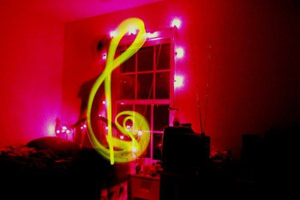

shankFiddle
Musician · Philosopher · Artist
Sound is thought made audible — this is where I keep both.
Musician · Philosopher · Artist
Sound is thought made audible — this is where I keep both.

About
I'm Shankar Srinivasan — a musician first, but never only that. My work moves between the fretboard and the page, between a tuned string and an untuned question.
Musically I work across composition, improvisation, and sound design — building instruments as often as I play them. Philosophically I'm drawn to the questions that don't resolve cleanly: what a chord "means," why a pattern feels inevitable, where structure ends and intuition begins.
This site is also a workshop. The tools below are small instruments I've built — for exploring harmony, patching synthesis, and watching structure emerge from simple rules. They're as much a part of the process as any recording.
Composition, improvisation, and sound design across acoustic and electronic instruments.
Essays and ideas at the edge of aesthetics, structure, and perception.
Read the essays →Visual and generative work — fractals, patterns, and other forms thought takes.
Interactive
A small, growing collection of interactive pieces — half music theory, half art, built to explore rather than just explain.
Chord wheels, keyboards, and patch cables — the Circle of Fifths and the Modular Synth.
Explore MusicFractals, gears, and roulette curves — the Fractal Explorer and Spirograph Studio.
Explore ArtTools and toys currently being tested — rougher around the edges, catalogued as they take shape.
Poke aroundContact
For bookings, collaborations, or just to talk about chords and Kant.